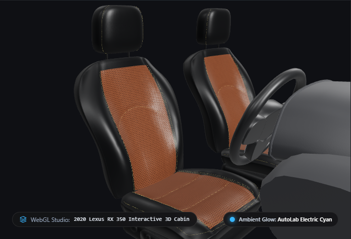

Lexus RX 3502020 / AWD

Choose your finish.
Begin with the surface you want to live with.
Classic SmoothA quiet, continuous finish.
✓Diamond QuiltedAn expressive, stitched surface.
Perforated LeatherA closely spaced perforated finish.
Continue to colour →
Sample finishes. Availability and final materials are confirmed with the atelier.